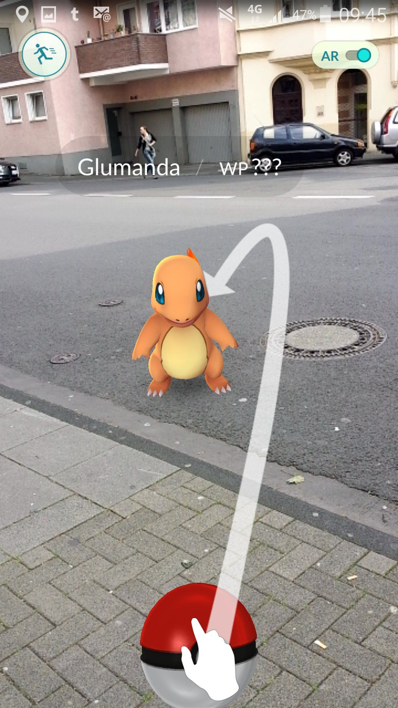
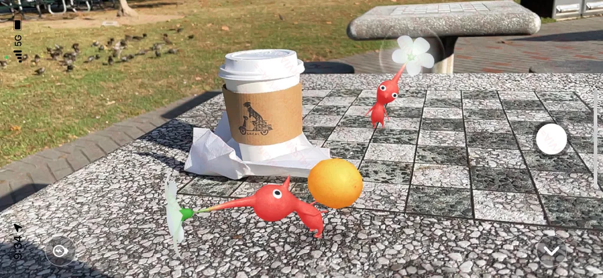
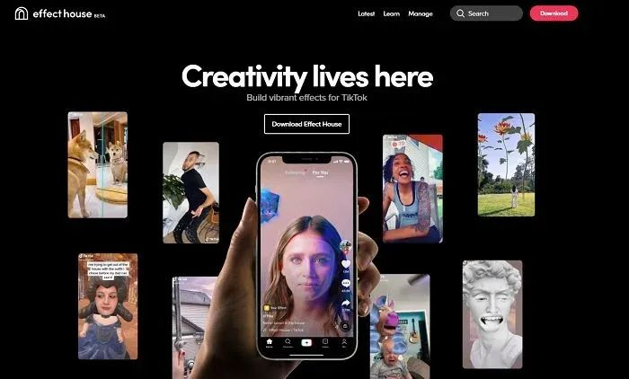
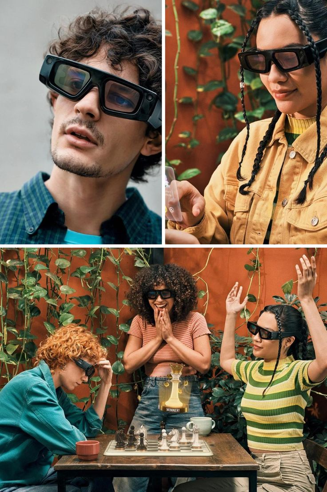

얼굴:
안티-셀피.
유태양
TAEYANG
YOO.
"I make tools for artists.
I make art with tools."

왜
이 클럽
인가.
유튜브 알고리즘은
어떻게 이토록
치밀하고 첨예한가?
나의 데이터에 의해서 정렬되는 유튜브의 피드.
나를 보고 나에게 맞춰준다는 자비로움 뒤에,
나를 분류하고 묶어두는 장치가 작동한다.
- 01취향 · 의견 · 정치성한 사람의 시청 패턴이 곧 한 사람의 좌표가 된다.
- 02시간 · 에너지 · 감정가장 효율적으로 머무르게 만드는 콘텐츠 순으로 줄세움.
- 03출구 없음피드 안에 있는 나는, 피드 밖의 나를 잊는다.
TikTok Effect House.
게임을 만들고, 이펙트를 만들고, 유니티 급의… 무언가?
카메라 앞에 서 있는 평범한 사용자를 위한 노드 기반 게임 엔진.
"이거 같이
연구해보고 사용해보면
재밌겠다."
FEED
HIJACK
ING.
나의 신체와 공간을
다시 점유하기.
알고리즘이 정한 나를, 4주 동안 우리가 다시 정해본다.
그리고 — 직접 만들어본다.
CURRICULUM
4 WEEKS
안티-셀피
룰렛 / 점수 / 유형
공간
더 나아가기
나와 AR / 필터.
7문항. 짧게 적어두고, 한 사람씩 골라 이야기를 풀어봅시다.
자동 저장됩니다.
AR
생태계,
지형도.
Augmented Reality —
현실 공간 위에
하나의 레이어를
덧씌우는 작업.
MediaPipe
→ Instagram Reels.
PHONE
→
GLASS
결국 안경으로 흘러간다.
스마트폰 위의 카메라가 얼굴 위로 옮겨가는 10년.

GO

BLOOM

EFFECT HOUSE

2024
먼저 도구.
설치 & 둘러보기.
AR 필터들은
인간의 얼굴을
어떻게 인터페이스화 하는가?
그리고 — 우리가 그 인터페이스를
다르게 전유할 방법은?
읽어볼 거리 — Augmented Reality and Art.
인터페이스는 표면이 아니라
문이다.

Lens Studio
익혀보기.
- 01Face얼굴 추적 노드 사용 — 카메라 입력에 얼굴이 어떻게 좌표가 되는가.
- 02Preview시뮬레이터로 띄워보기 — 데스크탑에서 즉시 검증.
- 03Head Binding결국엔 추적이다 — 머리 위에 붙는 모든 것의 원리.
- 04Rendering 순서순서가 효과를 결정한다 — 레이어 우선순위 실험.
각자의
한 장면,
같이
봅시다.
- 01오늘 가장 이상했던 한 장면스스로 만든 것이든, 남의 것이든, 멈추게 한 한 컷.
- 02의도와 어긋난 부분예상대로 되지 않은 것이 보여주는 단서.
- 03다음 주에 들고 오고 싶은 질문이번 한 주, 머릿속을 떠나지 않을 한 가지.
판정 :
룰렛 / 점수 /
유형 테스트.
나를 점수와 유형으로 분류하는 장치를
직접 만들어본다. 그리고 — 그 권력을 분해한다.